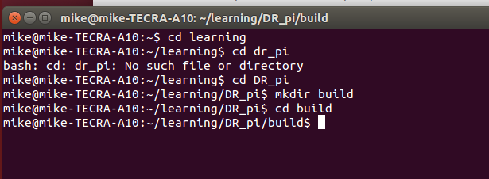
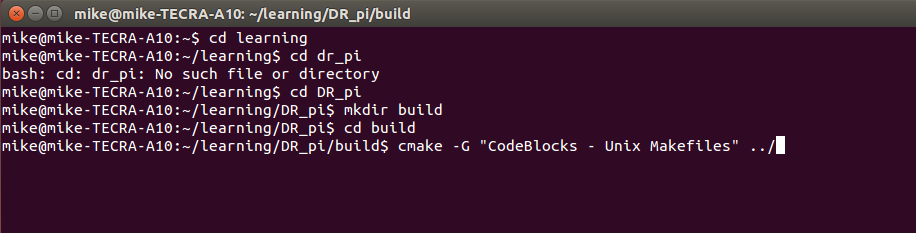
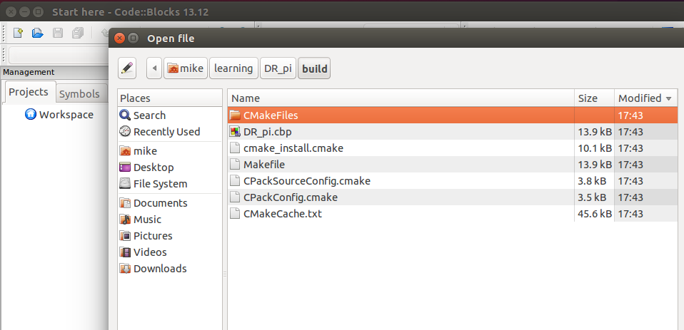
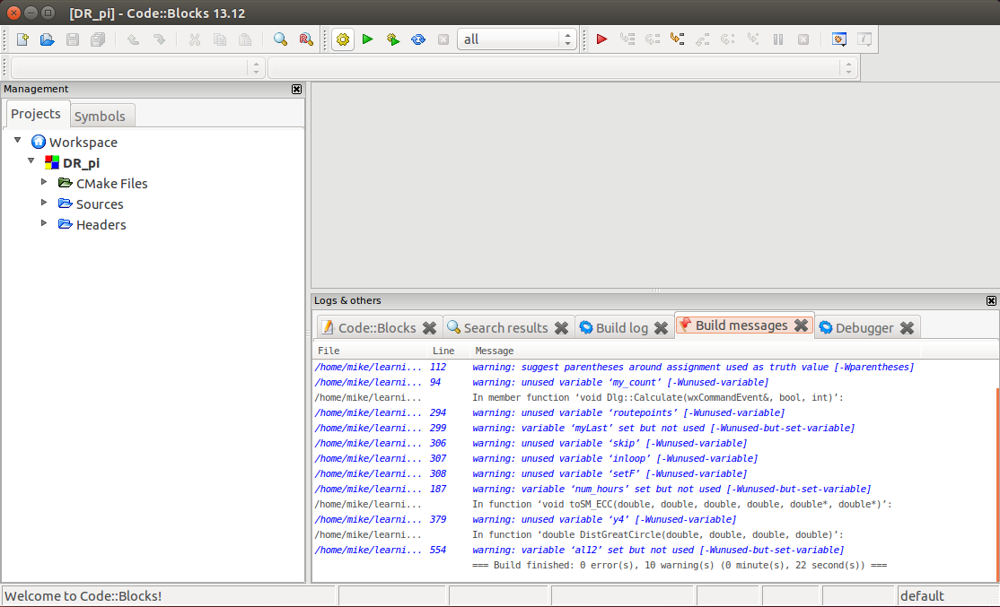
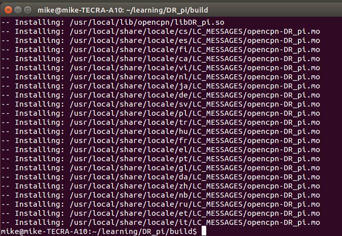
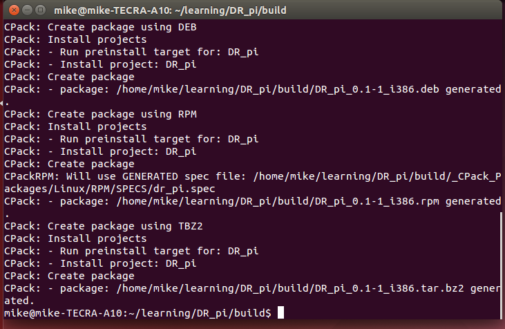
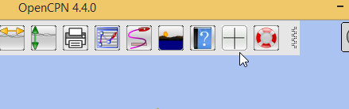

Fork and Build (Linux)
Requirements
-
Register with GitHub and obtained a profile. This allows the setting up of repositories where your code can be published.
-
Git
-
CMake
Process
-
Using GitHub and working from your main GitHub folder make a fork of DR_pi from https://github.com/Rasbats/DR_pi
-
Using 'Terminal' clone the plugin onto your machine:


-
Make the 'build' directory and cd to 'build':

-
'CMake' a 'CodeBlocks' project:


-
To see what files have been made use 'Files' to navigate to 'learning/DR_pi/build'. The 'CodeBlocks' project is called 'DR_pi.cbp'.

-
Start 'CodeBlocks' and 'Build' the project.

-
There are some warnings but no errors.
-
This builds the plugin file 'libDR_pi.so' in the 'build' directory

-
The .so file can be moved to the plugins folder 'usr/lib/opencpn' using 'Terminal'.

Alternative plugin installation using the Software Centre
-
It may be easier to make a package and install this using the 'Ubuntu Software Centre'.
-
From 'Terminal', in 'build', 'sudo make install', 'sudo make package'. The .deb package is made in the 'build' folder.

-
Open the .deb file from 'build' in the 'Ubuntu Software Centre'.

-
A warning

-
Carry on!


-
The plugin libDR_pi.so has been installed in '/usr/lib/opencpn'.
-
When you enable the DR plugin you should see the plugin icon on the toolbar.
